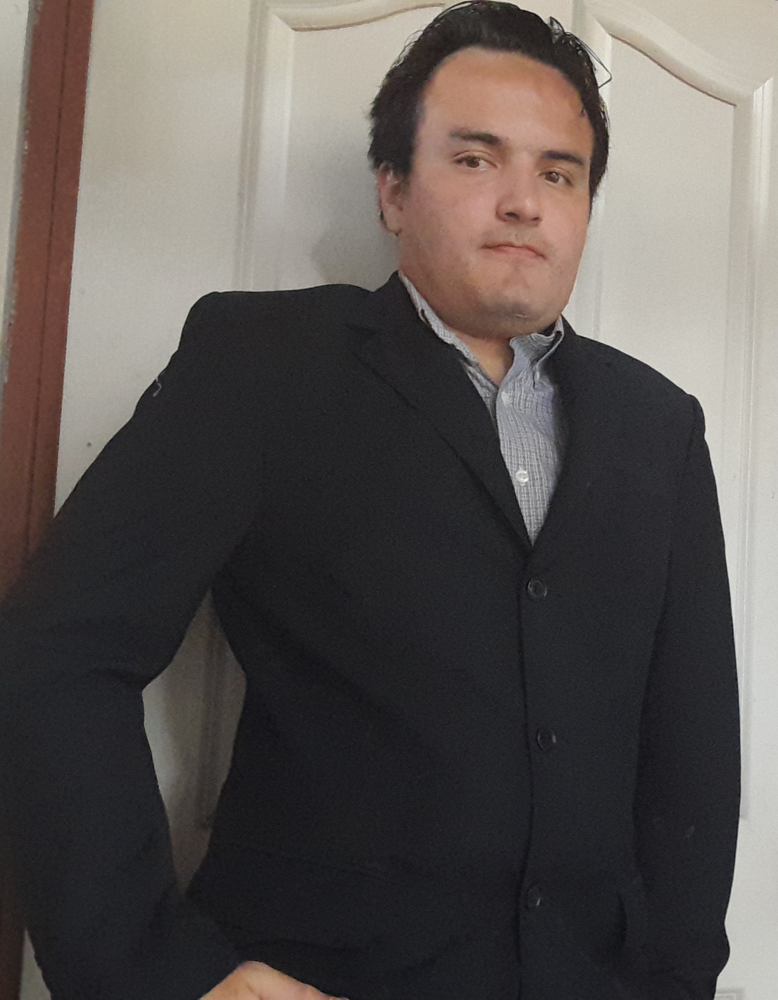

Ing. Efraín Castañeda D.
Ingeniero en Sistemas – QA Senior
Resumen profesional
Licenciado en Ingeniería en Sistemas, certificado ISTQB Agile Tester e incorporado al Colegio de Profesionales en Informática y Computación. Más de una década asegurando la calidad de software bancario, de telecomunicaciones y comercio electrónico.
Amplia experiencia en aseguramiento de la calidad del software con herramientas como Test Manager, Azure DevOps, Visual Studio, Jira con QMetry, XRay, TestRail y Bugzilla. Trabajo con metodologías ágiles como Scrum y Kanban, y realizo pruebas de servicios (API Testing) con Postman y JMeter.
Conocimientos en automatización de pruebas con Selenium WebDriver en Python, junto con GitHub y Jenkins. También en desarrollo de software y bases de datos con C#.NET, ASP.NET, VB.NET, SQL Server, Oracle y MySQL.

- Dadoun producto con riesgos de calidad
- CuandoEfraín se une al equipo de pruebas
- Ydiseña casos, ejecuta y automatiza
- Entonceslos defectos se encuentran antes de producción